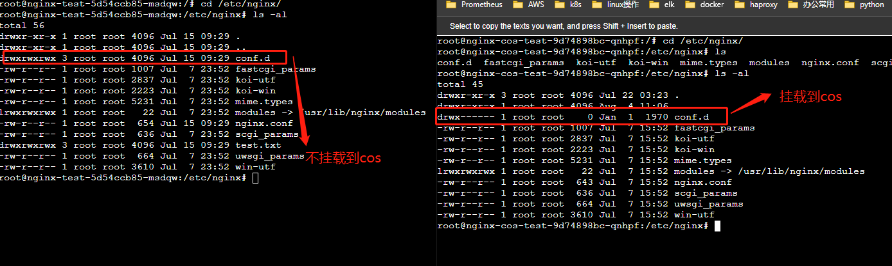
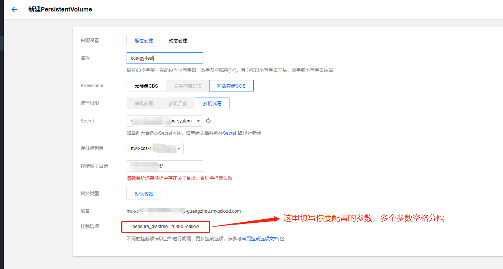
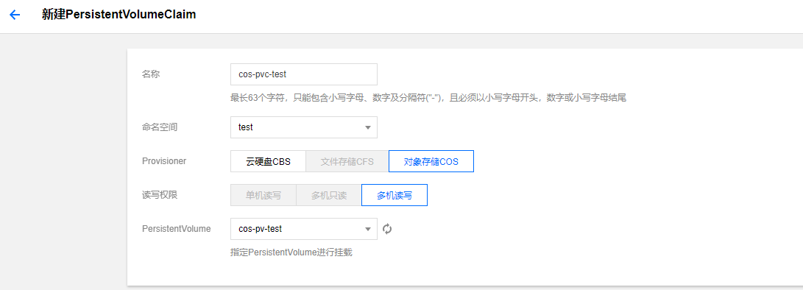
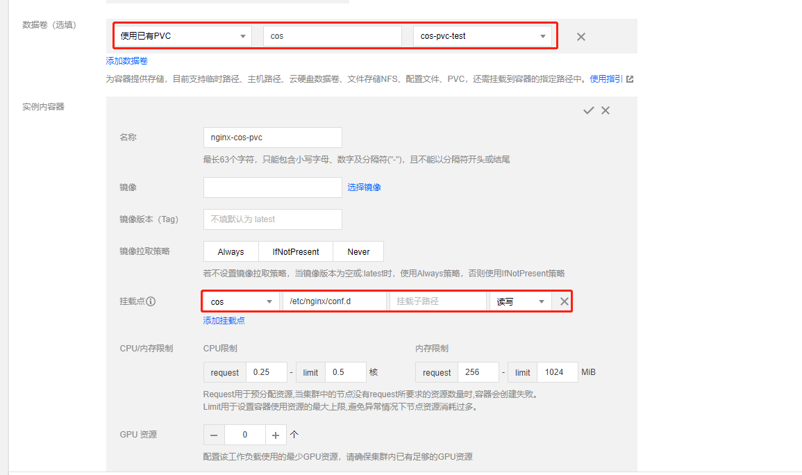
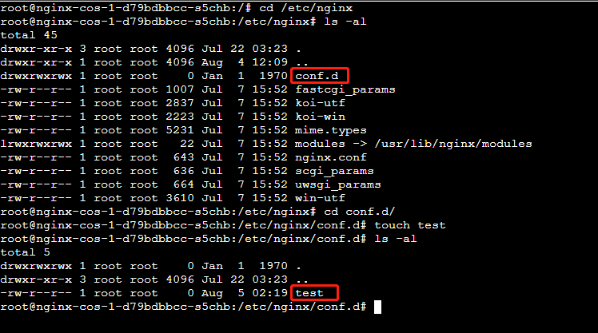
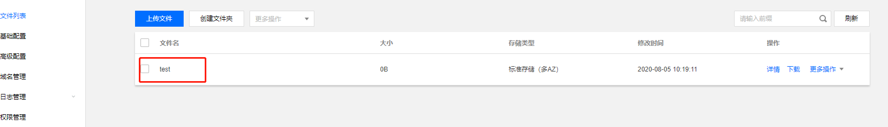
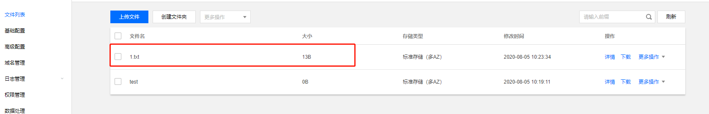
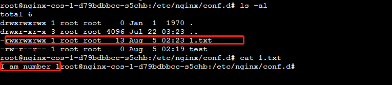

本篇文章介绍了在tke集群中挂载cos桶如何配置目录权限问题
问题背景
用户在tke的集群中创建工作负载并把某一个对应的/data目录挂载到cos桶的根目录，在镜像构建的时候有把/data目录设置权限为755，但是运行容器后成功挂载/data/目录到cos桶的根目录，但是发现用非root账号确无法访问/data下面的文件，这边镜像的启动用户是非root用户，查看容器内/data目录权限变成了700，为什么这边设置的目录权限是755，挂载到COS后就变成了700权限呢？
排查思路
这边首先进行了简单的自测，启动2个nginx工作负载，一个负载将目录/etc/nginx/conf.d挂载到cos桶上，一个正常运行不挂载，然后发现确实挂载cos后，默认会把目录权限变成700。

这边咨询的cos的同事，他们说有一个参数是用来控制目录权限的，如果挂载时候不加这个参数就默认变成700，加了这个参数才不会。现在问题已经大致明确了，就是这个参数没有设置的原因，那么这个参数该怎么使用呢？
1 | -oallow_other |
配置-oallow_other参数
其实在使用cos桶进行挂载的时候在pv创建界面是可以进行参数设置的，但是由于我们习惯在控制直接创建pvc关联pv，然后pv会自动创建导致很多人没有去关注这个cos的参数项配置。
如果你想配置-oallow_other这个参数，可以通过2种方式进行配置，一种是编写yaml文件来创建pv,pvc，这种方式可以参考这个指导 https://github.com/TencentCloud/kubernetes-csi-tencentcloud/blob/master/docs/README_COSFS.md
另外一种方式就是通过控制台来配置参数，具体操作如下
控制台创建pv，配置参数
在挂载选项填入-oallow_other这个参数，想填写多个参数空格分隔，cos提供的参数配置选项可以参考https://cloud.tencent.com/document/product/436/6883#.E5.B8.B8.E7.94.A8.E6.8C.82.E8.BD.BD.E9.80.89.E9.A1.B9

创建pvc关联创建的pv
新建pvc关联创建好的pv

在工作负载中挂载创建好的pvc
创建nginx的工作负载挂载创建好的pvc

验证对应的目录权限是否正确
进入容器中查看/etc/nginx/conf.d的目录不再是700，创建一个test文件，也挂载到了cos桶中


上传一个文件到cos桶看容器中是否可以访问
上传一个1.txt文件到cos桶，从容器中看文件权限是777，可以进行正常访问



欢迎访问 Vashon 的博客，博客和文章在完善中，请大家耐心等待。 若有问题或者有好的建议欢迎留言，笔者看到之后会及时回复。